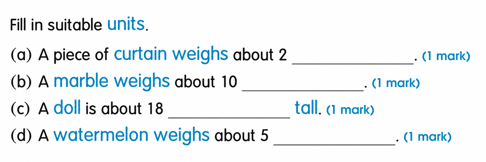
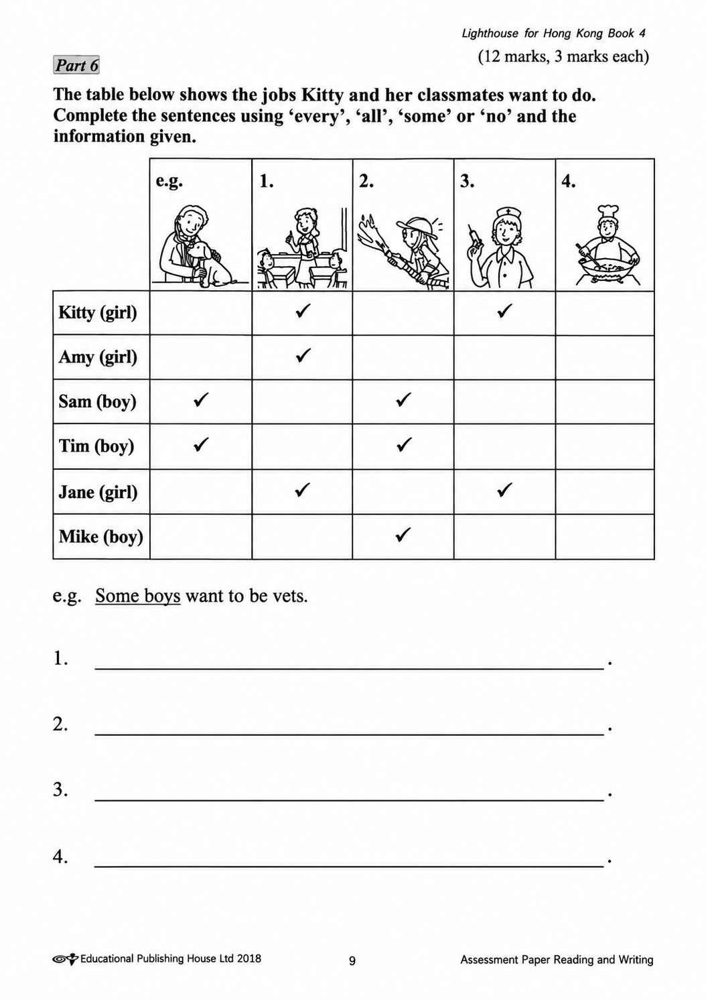
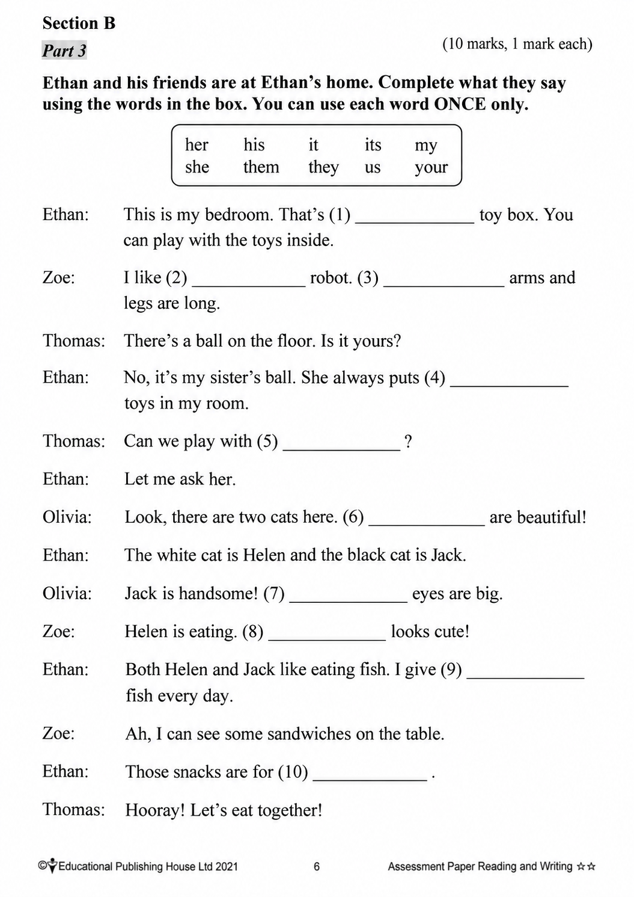
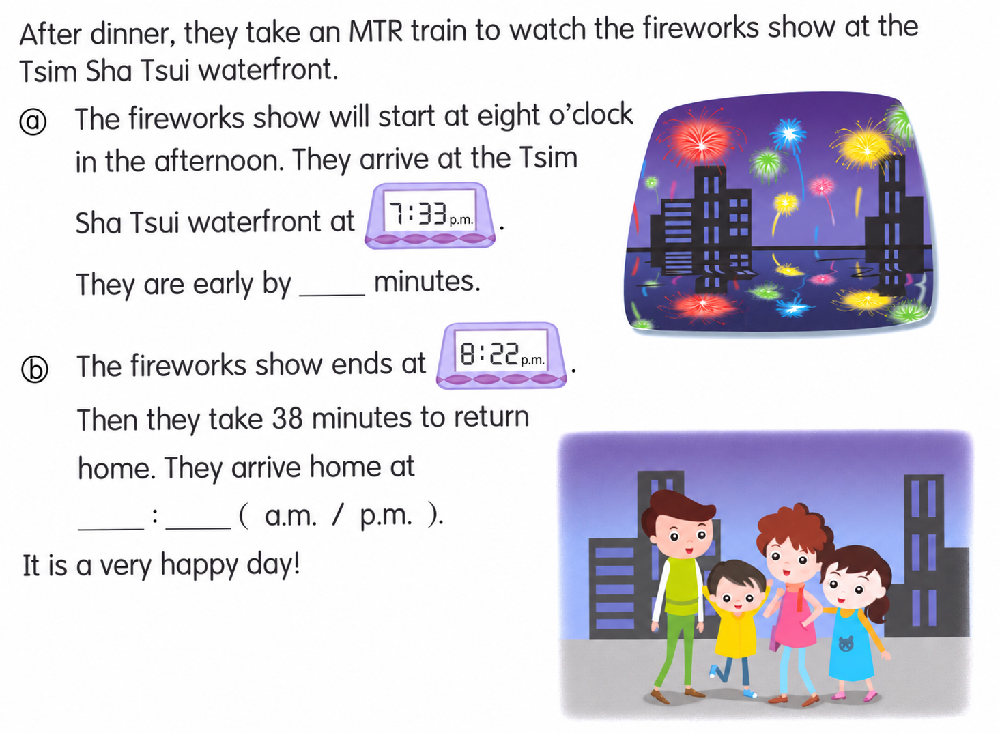

已掌握
| # | 中文意思 | 例句/提示 | 英文默写 | 已掌握 |
|---|---|---|---|---|
| noun 名词 | ||||
| 1 | 主人 | The dog loves its . | ||
| 2 | 头发 | Her is long. | ||
| 3 | 分钟 | Please wait a . | ||
| 4 | 双胞胎 | My brother and I are . | ||
| 5 | 未来 | I will study hard in the . | ||
| 6 | 厨师 | The cooks dinner. | ||
| 7 | 小学生 | The reads a book. | ||
| 8 | 飞机 | We travelled to Japan by . | ||
| verb 动词 | ||||
| 9 | 喂养 | I my fish every day. | ||
| 10 | 花费 | I one hour reading. | ||
| 11 | 见面 | Let's at the school gate. | ||
| phrase 短语 | ||||
| 12 | 左转 | at the corner. | ||
| 13 | 脱下 | Please your shoes. | ||
| 14 | 等一下 | , please. | ||
| 15 | 洗餐具 | We after dinner. | ||
| adjective 形容词 | ||||
| 16 | 友好的 | The teacher is . | ||
| 17 | 爱干净的 | My brother is and always puts his toys away. | ||
| 18 | 有帮助的 | This map is . | ||
| 19 | 相同的 | We are in the class. | ||
| 20 | 特别喜欢的 | My sport is basketball. | ||
| # | 单词/词组 | 中文意思 | 例句/说明 | 已掌握 |
|---|---|---|---|---|
| adjective 形容词 | ||||
| 1 | shady | We sit under a shady tree. | ||
| 2 | organic | My uncle grows organic vegetables. | ||
| 3 | hard-working | They are hard-working. | ||
| noun 名词 | ||||
| 4 | word | Please write fifty words. | ||
| 5 | ham | Where does ham come from? | ||
| 6 | photograph | This photograph is beautiful. | ||
| 7 | postman | The postman brings letters. | ||
| 8 | housewife | The housewife is cooking. | ||
| 9 | reindeer | The reindeer is walking in the snow. | ||
| 10 | adventure | The story is a fun adventure. | ||
| 11 | flat | We live in a flat. | ||
| 12 | timetable | The timetable shows my classes. | ||
| 13 | blanks | Fill in the blanks with the correct words. | ||
| 14 | Putonghua | Li Ying is good at Putonghua. | ||
| 15 | supermarket | Jerry is at the supermarket with Aunt June. | ||
| 16 | bush | The kitten is hiding behind a bush. | ||
| noun phrase 名词短语 | ||||
| 17 | present continuous tense | The sentence "I am reading" is in the present continuous tense. | ||
| 18 | cup of hot chocolate | I would like a cup of hot chocolate. | ||
| 19 | animal shelter | It is Claire's birthday. Her mother takes her to an animal shelter. | ||
| 20 | total price | The total price of three apples at two dollars each is six dollars. | ||
| verb 动词 | ||||
| 21 | pack | Eric packs the basket but there is a hole in the bottom! | ||
| 22 | arrive | I arrive at school on time. | ||
| 23 | locate | We can locate the place on the map. | ||
| 24 | dry | I dry my dog with a towel after his bath. | ||
| verb phrase 动词短语 | ||||
| 25 | make paper toys | Can you make paper toys? | ||
| 26 | playing computer games | He likes playing computer games. | ||
| 27 | paint pictures | I like to paint pictures after school. | ||
| 28 | eat moon cakes | We eat moon cakes at the Mid-Autumn Festival. | ||
| 29 | have a birthday party | I want to have a birthday party at home. | ||
| noun/verb 名词/动词 | ||||
| 30 | survey | We do a survey in class. | ||
| # | 中文意思 | 例句/提示 | 英文默写 | 已掌握 |
|---|---|---|---|---|
| time/date 时间日期 | ||||
| 1 | 一月 | is the first month. | ||
| 2 | 四月 | is the fourth month. | ||
| 3 | 九月 | is the ninth month. | ||
| 4 | 十二月 | is the twelfth month. | ||
| 5 | 星期日 | is a weekend day. | ||
| directions 方向 | ||||
| 6 | 西 | The sun sets in the . | ||
| numbers 数字 | ||||
| 7 | 2 | is 2. | ||
| 8 | 4 | is 4. | ||
| 9 | 16 | is 16. | ||
| 10 | 19 | is 19. | ||
| ordinal numbers 序数 | ||||
| 11 | 第三 | This is the shape. | ||
| solid shape 立体图形 | ||||
| 12 | 六棱锥 | A has one hexagonal base and six triangular side faces. | ||
| plane shape 平面图形 | ||||
| 13 | 梯形 | A has exactly one pair of parallel sides. | ||
| 14 | 平行四边形 | A has two pairs of parallel sides. | ||
| geometry 几何 | ||||
| 15 | 邻边 | These are . | ||
| # | 单词/词组 | 中文意思 | 例句/说明 | 已掌握 |
|---|---|---|---|---|
| operations 运算 | ||||
| 1 | addition | Addition means putting numbers together. | ||
| geometry 几何 | ||||
| 2 | curve | Draw a curve. | ||
| 3 | parallel to each other | The two lines are parallel to each other. | ||
| question word 题目词 | ||||
| 4 | estimate | Estimate the answer first. | ||
| answer 答案 | ||||
| 5 | result | Check the result after you calculate. | ||
| 6 | correct | Choose the correct answer. | ||
| place value 位值 | ||||
| 7 | tens | The digit is in the tens place. | ||
| 8 | 5-digit number | 12,345 is a 5-digit number. | ||
| comparison 比较 | ||||
| 9 | fewer | There are fewer apples in this box. | ||
| 10 | most | Which group has the most? | ||
| time/date 时间日期 | ||||
| 11 | hour hand | At three o'clock, the hour hand points to 3. | ||
| 12 | minute hand | At three o'clock, the minute hand points to 12. | ||
| position 位置 | ||||
| 13 | above | The clock is above the board. | ||
| operations calculation 运算 | ||||
| 14 | subtract A from B | "Subtract A from B" means B - A. | ||
| 15 | divisor | The divisor divides the dividend. | ||
| 16 | checking | Checking by addition shows that 9 - 4 = 5 is correct: 5 + 4 = 9. | ||
| teacher math vocabulary 老师数学词汇 | ||||
| 17 | finish | Please finish the calculation. | ||
| currency money 货币 | ||||
| 18 | dollar | One dollar has 100 cents. | ||
| 19 | coin | The coin is round. | ||
| 20 | change | Count the change after paying. | ||
| measurement 测量 | ||||
| 21 | ruler | Use a ruler to measure the length of the line segment. | ||
| 22 | centimetre | A centimetre is a small unit of length. | ||
| 23 | length | Find the length of the line. | ||
| 24 | gram | One gram is one thousandth of a kilogram. | ||
| 25 | weight | The weight of this bag is 2 kg. | ||
| 26 | pointer | The pointer on the scale shows 2 kg. | ||
| position order 位置和顺序 | ||||
| 27 | following | Answer the following questions. | ||
| data charts 统计图 | ||||
| 28 | pictogram | Read the pictogram. | ||
| plane shape 平面图形 | ||||
| 29 | lower base | The lower base of this trapezium is 7 cm long. | ||
| 30 | right-angled trapezium | A right-angled trapezium has two right angles. | ||



